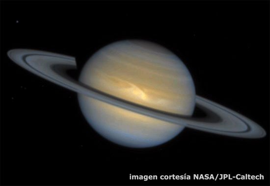
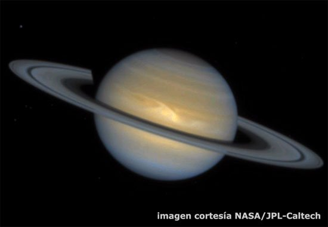
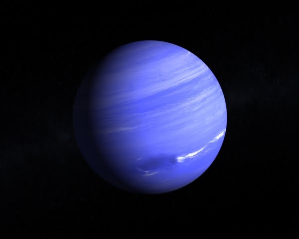
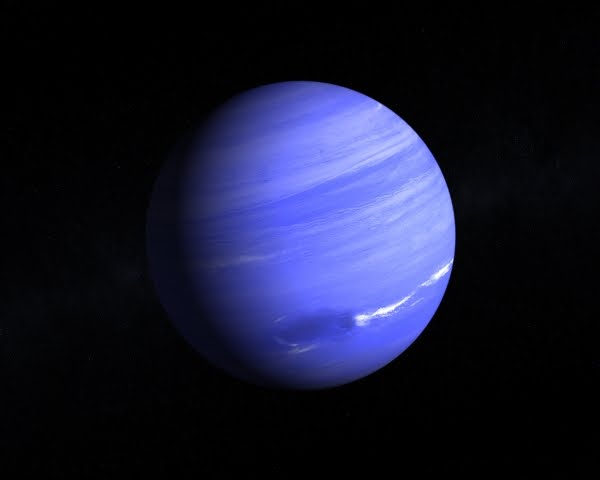

La cabeza en las estrellas: este es el universo
 

 

El origen del universo
¡Asunto peliagudo! Interrogarse sobre el origen del universo no es mas ni menos que abordar la cuestion fundamental de la humanidad, que atormenta a los seres humanos desde la noche de los tiempos. Pero no hay por qué inquietarse, pues no nos perderemos en conjeturas metafísicas abstractas. Nuestro objetivo es mucho más modesto y, sobre todo, pragmático. Consiste en exponer, de forma esquemática, el estado actual de los conocimientos científicos sobre este tema.
El concepto del universo
El concepto del universo, antes de la aparición del método científico en el siglo XVII, destila una visión
teológica. Los dioses, que se convertirán en uno solo, ordenan los planetas y las estrellas y crean al ser
humano, tras proveer la Tierra de todo lo necesario para su supervivencia. El siglo XX proporciona los medios
necesarios para verificar con instrumentos precisos, de forma experimental, la estructura, el nacimiento y la
evolucion del universo.
Hasta hace tiempos relativamente recientes se postulaban cuatro teorias
diferentes:
- El universo en expansion:
- Nace tras una explosión gigantesca hace dieciséis mil millones de años (el famoso Big bang), está en expansións continua y no conoce limites
- El universo pulsante
Al igual que la hipotesis anterior, el universo está en expansión continua, pero llegado a un punto de dicha expansión se contraerá y volverá a ocupar su espacio original, para explotar de nuevo. se denomina "pulsante" porque alterna la contracción y la expansión. En opocisión al big bang, se conoce también como Big crunch
- El universo multiple
- El universo estacionario